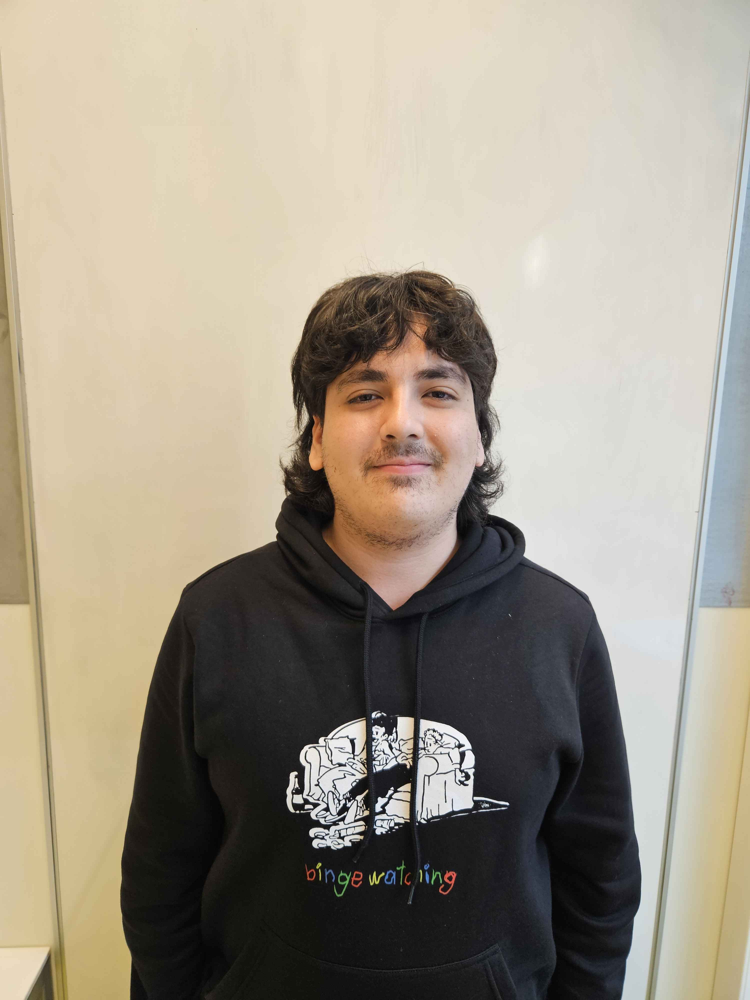

over ons
Wij zijn adapt this!

Melih: Met een passie voor gamen en films richt Melih zich in deze podcast specifiek op film- en game-adaptaties.
Van iconische titels tot minder bekende
projecten, Melih verkent hoe games worden omgevormd tot films en series. Deze fascinerende crossover biedt niet alleen vermaak,
maar ook interessante discussies over storytelling,
cinematografie de uitdagingen van het overbrengen van een verhaal van het ene medium naar het andere
en een interessante nieuwe kijk op de games die we allemaal al kennen.
Thijs: Thijs duikt diep in de rijke wereld van stripverhalen en onderzoekt hoe deze iconische
en originele verhalen vaak de basis vormen voor films en games.
Van superhelden tot graphic novels, Thijs bespreekt niet alleen de oorsprong van deze verhalen,
maar ook hoe ze worden vertaald naar het grote scherm, digitale platformen in de form van videogames
en hoe deze verhalen nou anders zijn ten opzichten van hun digitale opvolgers. Waarom ze nou beter zijn of waarom juist niet.
Felix onderzoekt grondig de verschillende manieren waarop games worden omgevormd tot films en series
en hoe deze aanpassingen de oorspronkelijke verhalen en personages van deze games tot leven brengen.
Van blockbuster succesformules tot de minder bekende titels,
Felix bespreekt de uitdagingen en triomfen van het vertalen van interactieve
ervaringen van videogames naar de grote schermen.